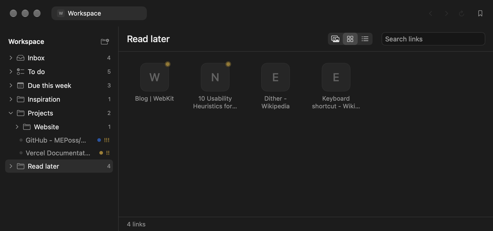
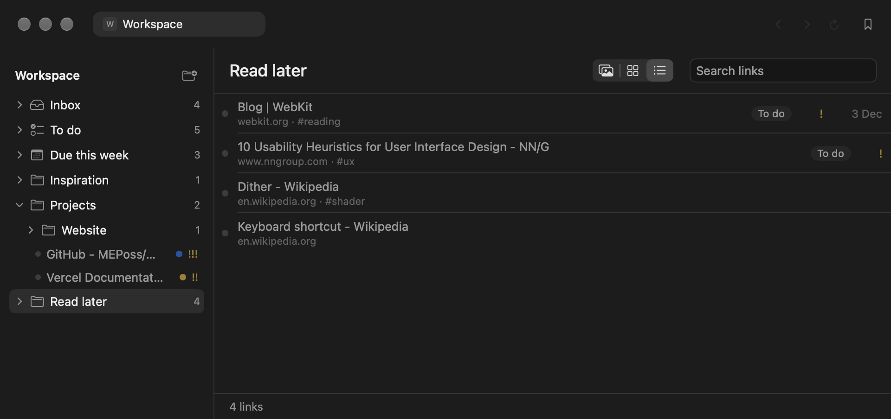

Usa WebKit, il motore che è già dentro macOS. Nessuna copia di Chromium.Runs on WebKit, the engine already inside macOS. No second copy of Chromium.
Un fork di SearchA fork of Search
↗
Le tue pagine aperte,
Le tue pagine aperte,
ordinate come file.
Your open pages,
sorted like files.
brOS è un browser per Mac che mostra le tab aperte come file in una finestra del Finder. Le sposti in cartelle, le segni, le ritrovi. brOS is a Mac browser that shows your open tabs like files in a Finder window. Move them into folders, mark them, find them again.
 placeholder · assets/workspace.png
placeholder · assets/workspace.png
Il WorkspaceThe Workspace
Un browser che tiene in ordine quello che apri. A browser that keeps what you open in order.
01
Una vista delle tab, non dei segnalibriA view of your tabs, not your bookmarks
Premi ⌘K e vedi le pagine che hai aperto. Una pagina nuova finisce da sola nella Inbox, senza che tu debba salvarla. Le sezioni sono Inbox, To do, Due this week e le tue cartelle, annidate quanto vuoi. Press ⌘K and see the pages you have open. A new page lands in the Inbox by itself, with nothing to save. The sections are Inbox, To do, Due this week and your own folders, nested as deep as you like.
placeholder · assets/workspace.png
02
Ogni link è un fileEvery link is a file
Ogni link ha stato, priorità, scadenza, tag e note. Trascini i link sulle cartelle. Selezioni più link come nel Finder (clic, ⌘, ⇧ o un rettangolo) e con “Crea cartella da selezione” li raccogli in un colpo. Every link has a status, a priority, a due date, tags and notes. Drag links onto folders. Select several as in the Finder (click, ⌘, ⇧ or a rubber band) and use “Create Folder from Selection” to gather them at once.
 placeholder · assets/details.png
placeholder · assets/details.png
03
Tre modi di guardarliThree ways to look at them
Icone, lista, snapshot. Nello snapshot ogni tessera è la foto della pagina come l’hai vista l’ultima volta, così riconosci subito quella che cerchi. Icons, list, snapshots. In snapshots, each tile is a picture of the page as you last saw it, so you spot the one you want at a glance.

placeholder · assets/view-icons.png
placeholder · assets/view-list.png placeholder · assets/view-snapshot.png
placeholder · assets/view-snapshot.png
04
Tieni quando chiudiKeep when closed
Di solito chiudere una tab fa sparire la pagina. Con ⌥⌘S il link resta nel Workspace anche dopo. Quello che non hai tenuto né messo in una cartella se ne va con la tab. Normally, closing a tab makes the page vanish. With ⌥⌘S the link stays in the Workspace afterwards. Anything you neither kept nor filed goes away with its tab.
 placeholder · assets/keep.png
placeholder · assets/keep.png
TastieraKeyboard
Si usa senza toccare il mouse. Works without touching the mouse.
Le frecce semplici appartengono al Workspace finché non clicchi su una pagina, che restituisce la tastiera a lei. The plain arrow keys belong to the Workspace until you click on a page, which gives the keyboard back to it.
⌘K
Apre il WorkspaceShow the Workspace
⇧⌘O
Workspace nella barra laterale, al posto delle tabWorkspace in the sidebar, in place of the tab column
⌥⌘S
Tieni la pagina in primo piano nel WorkspaceKeep the page in front in the Workspace
⌥⌘↑↓
Pagina precedente o successiva. La lista gira in cerchio e funziona anche con il cursore nel campo di GooglePrevious or next page. The list goes round, and it works with the caret in Google’s search field
⌥⌘←→
Sezione precedente o successivaPrevious or next section
↑↓←→
Dentro il Workspace: ti muovi tra sezioni e link, apri e chiudi le cartelle. Invio apre la paginaInside the Workspace: move through sections and links, open and close folders. Return opens the page
⌫
Elimina i link selezionati, con confermaDelete the selected links, with a confirmation
Le basiThe foundation
Sotto c’è Search: piccolo, veloce, silenzioso. Underneath is Search: small, fast, quiet.
~14 MB
Nessuna toolbarNo toolbar
Un solo campo per indirizzi e ricerche, e la pagina.One field for addresses and searches, and the page.
Ad blockerAd blocker
Integrato, ferma i tracker prima che la pagina si disegni.Built in, it stops trackers before the page draws.
Niente accountNo account
Nessuna telemetria. La sincronizzazione iCloud è opzionale e usa il tuo iCloud, non un server nostro.No telemetry. iCloud sync is optional and uses your own iCloud, not a server of ours.
InstallazioneInstall
Tre passaggi.Three steps.
- 1
Scarica
Bros.dmge trascina l’app in Applicazioni.DownloadBros.dmgand drag the app into Applications. - 2
La prima volta, clic con il tasto destro su Bros e scegli Apri.The first time, right-click Bros and choose Open.
- 3
Da quel momento si apre come ogni altra app.From then on it opens like any other app.
brOS non è ancora notarizzato da Apple: per questo macOS chiede conferma la prima volta. Non si aggiorna da solo: le nuove versioni si scaricano dalle Releases. brOS is not yet notarised by Apple, which is why macOS asks you to confirm the first time. It does not update itself: new versions are on the Releases page.